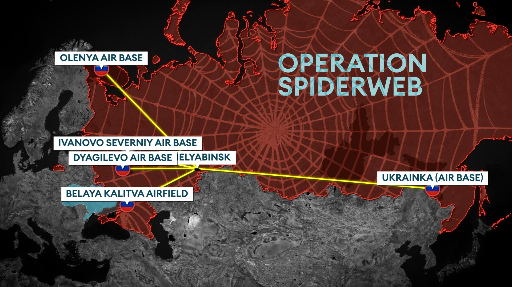
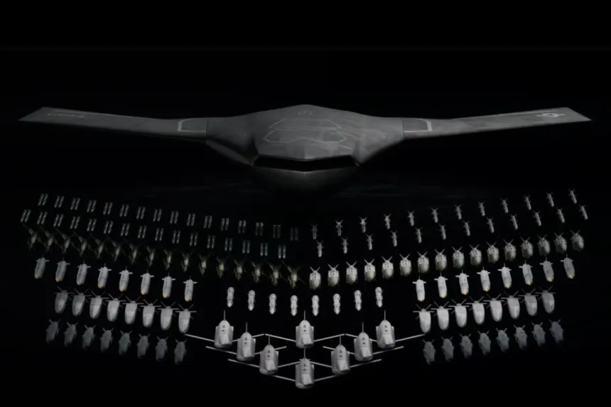

Veille informatique
L'informatique dans la guerre
Ma veille informatique porte sur l'application de l'informatique dans les technologies militaires.
état de l'art
Opération Toile d'araignée

L’opération "Toile d’araignée" est le nom donné à une campagne de drones coordonnés, attribuée à l'Ukraine, illustrant l’évolution des conflits armés vers des formes hybrides de guerres mêlant cyberespace et opérations militaires "classiques".
référence moderne est très récent pour comprendre la convergence cyber–renseignement–influence, la difficulté d’attribution, et la montée en puissance des opérations continues plutôt que des attaques ponctuelles.
On observe depuis quelques années (depuis le début de la guerre en Ukraine plus précisément) une explosion de l'intérêt porté aux technologies informatiques à des fins militaires, en particulier des drones et de leurs systèmes embarqués.
Quelques chiffres :
+300% des cyberattaques de la Russie - 70% ~ 80% des pertes dans la guerre Ukraine-Russie du aux drones - un marché des UAV estimé à jusqu'à 30 Mrd de $ avant 2030
Sources :
https://www.globenewswire.com/fr/news-release/2025/08/12/3131702/0/en/Unmanned-Aerial-Vehicle-UAV-Market-to-Reach-US-127-1-Billion-by-2033-Astute-Analytica.html
https://www.forcesnews.com/feature/uncanny-parallels-between-ukraines-op-spiderweb-and-sas-missions-during-second-world-war
https://www.europe1.fr/international/ukraine-les-cyberattaques-russes-en-hausse-de-300-en-2022-dans-les-pays-de-lotan-4167395
Second Article - Septembre

Début Septembre, l'armée Ukrainienne à coupler une IA avec ses drones, leur permettant d'agir comme un essaim coordonnées, c'est une première mondiale. Cette IA leurs permet de choisir de façon autonome leur cible et de se les répartirs indépendament, d'attendre le moment opportun pour attaquer... Les utilisateurs n'ont qu'à
Cependant, la technologie reste instable et coûteuse.
Les responsables politiques commencent à s’en inquiéter. À terme, les experts anticipent une course aux armements des essaims de drones, avec des combats essaim contre essaim, où la qualité du logiciel et de l’IA deviendra le facteur décisif.
Source :
https://www.forcesnews.com/technology/ai-powered-swarms-pick-their-own-targets-mark-future-drone-warfare
3ème Article - Octobre
Le ministère britannique de la Défense lance DEEAMS, une plateforme de gestion des équipements militaires basée sur l’IA, destinée à optimiser la maintenance, la réparation, la logistique et la disponibilité des stocks.
Le système remplacera 17 applications obsolètes, jugées fragmentées, et servira plus de 65 000 utilisateurs sur 130+ plateformes militaires majeures.
Présenté comme un saut capacitaire majeur, DEEAMS vise à améliorer la préparation opérationnelle en fournissant aux forces le bon équipement, au bon moment, en métropole comme en opérations extérieures.
DEEAMS s’inscrit dans la stratégie britannique de modernisation accélérée des forces armées et d’intégration de l’IA dans les fonctions de soutien et de commandement.
Source :
https://www.forcesnews.com/technology/incoming-ai-system-help-predict-kit-repairs-over-130-major-kit-platforms
4ème Article - Novembre

Les avions de combat autonomes se développent à grande vitesse, portés par la course aux armements mondiale et les progrès rapides de l’intelligence artificielle. Comme par exemple :
- X-BAT (Shield AI) : entièrement autonome, conçu pour le combat aérien air-to-air, capable de dogfights, de vols longue distance (>2 000 NM), armé et doté de capacités VTOL pour opérer sans piste.
- YFQ-42 (General Atomics) : conçu pour accompagner des chasseurs pilotés (ex. F-35), servant de wingman IA, illustrant l’intégration IA-humain sur le champ de bataille aérien.
DEEAMS s’inscrit dans la stratégie britannique de modernisation accélérée des forces armées et d’intégration de l’IA dans les fonctions de soutien et de commandement.
Définition :
- Dogfight : combat aérien rapproché entre deux avions ou plus, souvent à courte distance, où la maniabilité et la tactique jouent un rôle clé.
- VTOL (Vertical Take-Off and Landing) : capacité d’un aéronef à décoller et atterrir à la verticale, sans nécessiter de piste traditionnelle.
Source :
https://www.forcesnews.com/technology/autonomous-airpower-new-aircraft-transforming-battlespace-skies